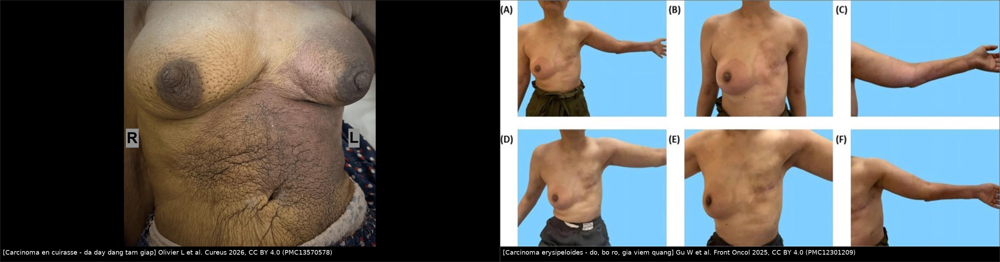
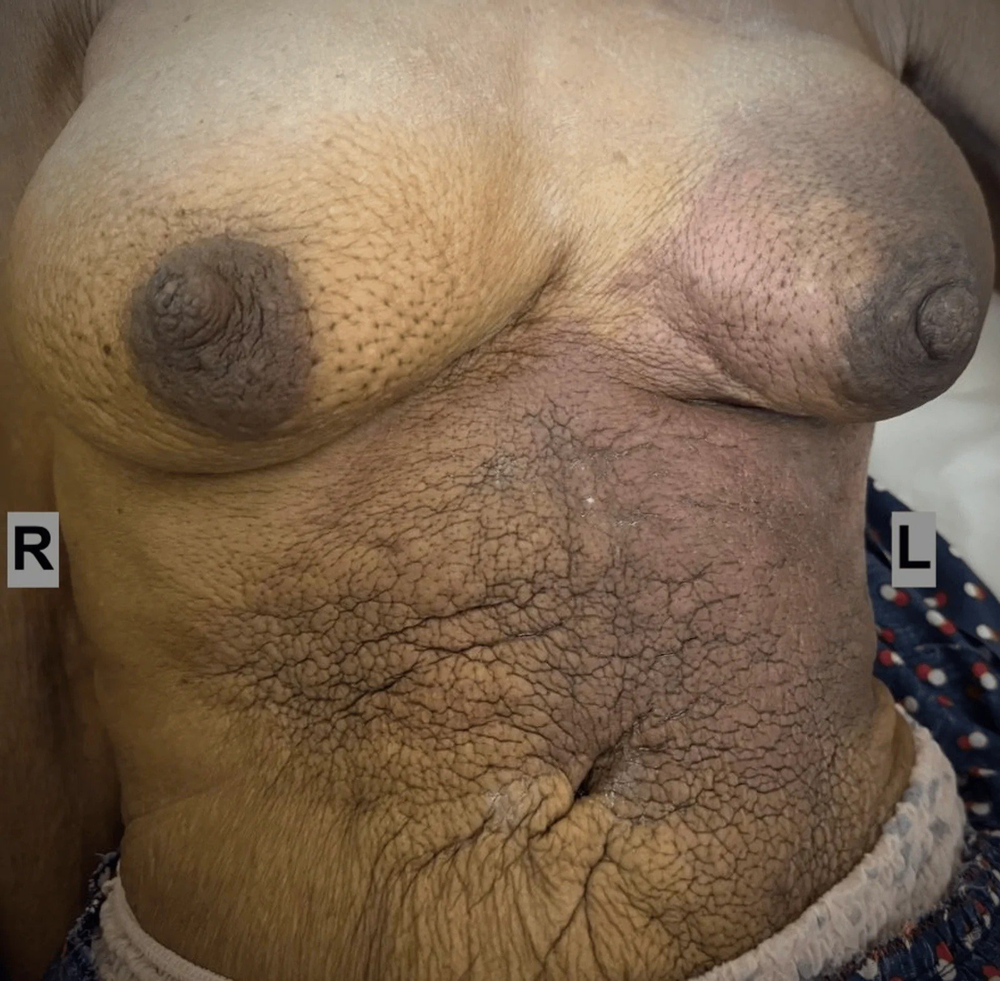
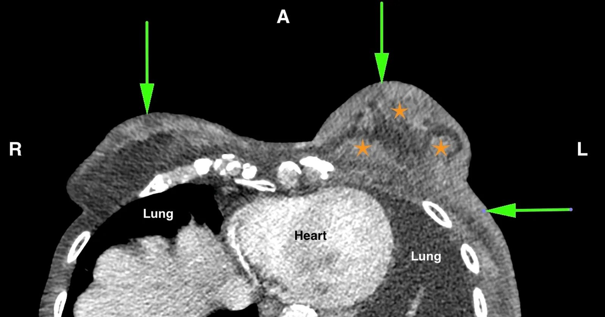
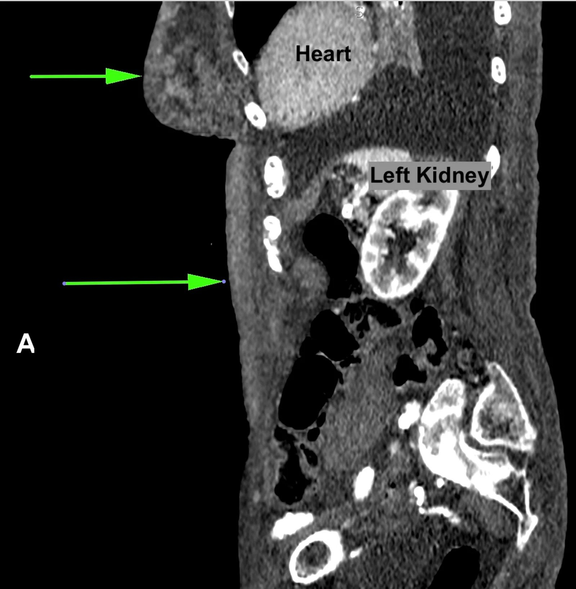
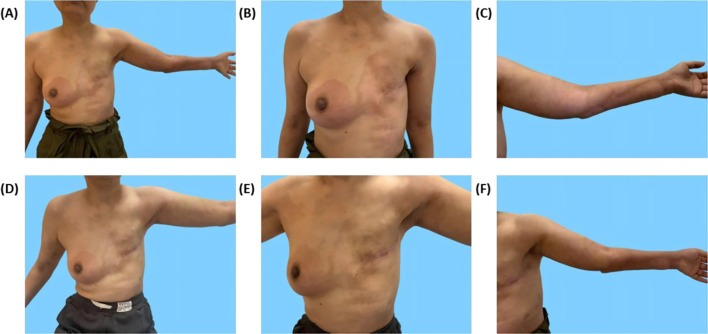
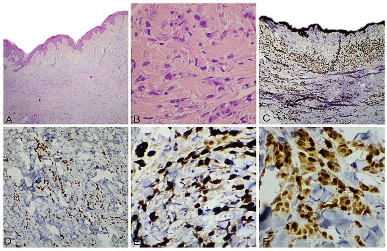

1618 — Di căn da & thành ngực của ung thư vú / Cutaneous and chest wall metastases of breast cancer
Tags: pattern:day-da pattern:not-da pattern:di-can-da pattern:man-do vung:vu vung:thanh-nguc score:BI-RADS score:TNM-AJCC8 protocol:MRI-vu protocol:sinh-thiet-da incidentaloma:not-da
Mức chắc chắn (certainty): tổng hợp y văn (literature synthesis) — nhóm tự biên từ y văn mở đọc trực tiếp qua Europe PMC (Cureus 2026, Frontiers in Oncology 2025, Dermatopathology 2025), có ca nguyên văn dùng cho quiz (ảnh CC BY 4.0). Số liệu dịch tễ lấy từ phần Discussion của các bài gốc (trích dẫn nội bộ Brownstein & Helwig; Mordenti và cs.).
1. Tổng quan — vì sao da là "cửa ngõ" của ung thư vú + cơ chế hình ảnh
- Định nghĩa tách bạch (điểm hay bị gộp): di căn da (cutaneous metastasis) = tế bào ung thư vú nằm trong trung bì/mô dưới da mà KHÔNG liên tục với khối nguyên phát — đây là bệnh toàn thân, giai đoạn IV. Ngược lại xâm lấn da trực tiếp (T4b) = khối vú lan liên tục ra da (loét, nốt vệ tinh cùng bên, phù da kể cả peau d'orange) — vẫn là giai đoạn IIIB, còn ý định chữa khỏi. Câu hỏi "có liên tục hay không" quyết định điều trị triệu chứng hay triệt căn, không phải độ dày da.
- Tần suất (định lượng):
- Di căn da nói chung chỉ chiếm ~0,2% các mẫu sinh thiết da (Tinca AC et al., Dermatopathology 2025; 25 ca/loạt của họ, 7 ca là dấu hiệu ĐẦU TIÊN của ung thư nội tạng).
- Ung thư vú là nguồn di căn da hay gặp nhất ở nữ: 24% các ca di căn da ở nữ; khoảng 70% các ca di căn da là thứ phát từ ung thư vú nguyên phát (Brownstein & Helwig, trích trong Olivier L et al., Cureus 2026).
- Mordenti và cs.: 164 ca di căn da do ung thư vú — 145 ca ở thân mình (88,4%), chỉ 3% mang hình thái "en cuirasse".
- Carcinoma en cuirasse (CeC): < 10% các di căn da do vú, thường xuất hiện SAU điều trị ban đầu; sống 1–2 năm sau khi da đổi (Olivier L et al. 2026).
- Carcinoma erysipeloides (CE): chỉ 3% di căn da của ung thư vú (Gu W et al., Front Oncol 2025).
- TẠI SAO hình ảnh trông như vậy (cơ chế + vật lý):
- Ba đường lan: bạch mạch (hay gặp nhất → emboli tế bào trong bạch mạch trung bì), máu, và trực tiếp. Bạch mạch bị tắc → dịch + protein ứ trong trung bì → da dày, phù, lỗ chân lông giãn = peau d'orange (da cam). Vì vậy dày da lan tỏa mà KHÔNG có khối trong vú là hình thái kinh điển của di căn da.
- Trên CT: phù + tế bào u + xơ làm tăng tỷ trọng mô mềm và dày da. Da thành ngực bình thường mỏng 1–2 mm ở người lớn; trong thực hành, > 2 mm hoặc dày không đối xứng được coi là bất thường — đây là quy ước đọc phim, chưa có nghiên cứu tiền cứu xác lập ngưỡng (ghi rõ để không "bịa" con số).
- Trên MRI: nước tự do trong trung bì → T2FS tăng tín hiệu; mô u đặc → ngấm thuốc và hạn chế khuếch tán (ADC thấp). Do đó MRI T2FS là chuỗi xung nhạy nhất để thấy phù da lan ra ngoài vú — điều mà nhũ ảnh bỏ sót.
- Trên siêu âm: da dày, tăng hồi âm ở lớp trung bì, mất phân lớp; có thể thấy ống bạch mạch giãn ("cobblestone") và hạch nách.
- Vì sao carcinoma THỂ TIỂU THÙY (ILC) hay di căn da: mất E-cadherin → tế bào rời nhau, không tạo đám dính, lan theo mô mềm/trung bì và cho di căn "bất thường" (da, phúc mạc, buồng trứng, màng não). Ca CeC của Olivier L et al. đúng mô hình này: ILC, ER/PR dương, HER2 âm, E-cadherin ÂM trên sinh thiết da.
- Hệ quả thực hành: hình thái "viêm" của da không đồng nghĩa viêm — mọi mảng đỏ bờ rõ, không sốt, không đáp ứng kháng sinh ở người có tiền sử ung thư vú phải sinh thiết da, không theo dõi kháng sinh dài.
2. Mẫu hình (pattern) + chẩn đoán phân biệt theo hình thái da (Gamut)
- Khuôn 1 — Dày da LAN TỎA thành "tấm giáp", da dai như da thuộc, không khối rõ. Gamut: CeC vs ung thư thể viêm (IBC, T4d) vs viêm da xạ vs phù bạch mạch sau mổ/xạ vs viêm mô tế bào lan. Chốt: punch da có carcinoma trong trung bì + IHC khớp nguồn vú.
- Khuôn 2 — Mảng đỏ, nóng, bờ rõ, lan nhanh, giống viêm quầng. Gamut: carcinoma erysipeloides vs viêm quầng/viêm mô tế bào vs viêm da xạ vs huyết khối tĩnh mạch nông. Chốt: không sốt/bạch cầu bình thường + không đáp ứng kháng sinh + bờ rõ kiểu "đường viền" → sinh thiết.
- Khuôn 3 — Nốt da/dưới da đơn độc, chắc, không đau, trên nền sẹo mổ hoặc gần núm. Gamut: di căn da vs u da nguyên phát (BCC/SCC/u gai) vs nang thượng bì vs hoại tử mỡ vs u mô bào sợi. Chốt: tiền sử ung thư vú + vị trí trong vùng dẫn lưu bạch mạch + IHC GATA-3 dương.
- Khuôn 4 — Nốt/tím nhiều ổ ở vùng ĐÃ XẠ, xuất hiện ≥ 3 năm sau xạ. Gamut: RAAS (sarcoma mạch do xạ) vs AVL/BLAP lành vs viêm da xạ muộn vs tái phát carcinoma da. Chuyển bài 523; chốt bằng MYC.
- Khuôn 5 — Tổn thương SÂU trong thành ngực (dưới cơ ngực, sát xương sườn). Gamut: tái phát/di căn thành ngực vs hoại tử mỡ thành ngực vs áp-xe/viêm sụn sườn sau xạ vs di căn xương sườn vs sarcoma thành ngực do xạ. Chốt: CT/MRI thấy tổn thương xuyên cơ hoặc phá xương = không phải hoại tử mỡ.
- Khuôn 6 — Nốt ở RỐN (Sister Mary Joseph nodule). Gamut: di căn từ dạ dày–đại tràng–buồng trứng–tụy nhiều hơn vú; vú vẫn có thể. Chốt: IHC (CK7/CK20, CDX2, PAX8, GATA-3).
- Gợi nhớ nhanh "DA – KHÔNG PHẢI VIÊM": Dày da không đối xứng · Anh ( imaging ) thấy phù lan ngoài vú · Không sốt, bạch cầu bình thường · Punch biopsy trung bì là chốt · Hỏi tiền sử ung thư vú · Ôn định sau kháng sinh = loại viêm nhiễm · Nhiều ổ/tái phát đúng vùng chiếu xạ = nghĩ mạch máu.
3. Bảng so sánh phân biệt (ma trận đối chiếu)
| Thực thể (entity) | Hình ảnh điển hình (lâm sàng / nhũ ảnh–DBT / siêu âm / CT–MRI) | Chốt vào (rule-in) | Chốt loại (rule-out) | Gợi ý xác nhận |
|---|---|---|---|---|
| Carcinoma en cuirasse (CeC) | Da dày lan thành "tấm giáp", dai, đỏ/nâu, có thể lan xuống bụng; nhũ ảnh: dày da lan tỏa + co kéo; CT: dày da không liên tục với khối vú; có thể có nhiều khối trong vú | "Breastplate" + dày da lan ngoài phạm vi tuyến + carcinoma trong trung bì có IHC khớp vú | Khối vú lan trực tiếp ra da có liên tục = T4b, không phải CeC | Punch da 4 mm đủ trung bì + IHC; chụp CT ngực–bụng định mức lan |
| Carcinoma erysipeloides (CE) | Mảng đỏ bờ rõ như vẽ, nóng, lan nhanh, giống viêm quầng; hay ở thành ngực và chi trên cùng bên | Đỏ bờ rõ + KHÔNG sốt + không đáp ứng kháng sinh + tiền sử ung thư vú | Sốt cao + tăng bạch cầu + đáp ứng kháng sinh trong 5–7 ngày → viêm quầng | Sinh thiết da vùng bờ; cấy da âm không loại trừ |
| Ung thư thể viêm (IBC, T4d) | 1/3 vú trở lên đỏ, phù, peau d'orange, khởi phát < 3 tháng; thường có khối/nhu mô dày | Khởi phát nhanh + ≥ 1/3 vú + không có carcinoma rời trong trung bì ngoài vú | Tồn tại > 3–6 tháng, không khối, dày da lan ra bụng → nghĩ CeC | Punch da + core khối; MRI đánh giá phạm vi |
| Di căn da dạng nốt | Nốt chắc 0,5–2 cm, da trên bình thường hoặc đỏ, thường gần sẹo mổ/núm | Tiền sử ung thư vú + nốt mới trong vùng dẫn lưu + GATA-3 dương | Nốt có mỡ/vôi hóa vỏ + ổn định nhiều năm → hoại tử mỡ | Sinh thiết cắt trọn/punch sâu + IHC |
| Viêm da xạ (radiodermatitis) | Đỏ–nâu, ranh giới đúng hình trường chiếu, có teo mạch, giãn mạch, xơ cứng; xuất hiện trong 6 tháng đầu | Ranh giới trùng trường xạ + tiến triển chậm + không carcinoma trong trung bì | Tổn thương lan RA NGOÀI trường xạ, hoặc có nốt/tím mới ≥ 3 năm → sinh thiết | So phim/ảnh cũ, đối chiếu bản đồ xạ |
| Viêm mô tế bào / áp-xe thành ngực | Đỏ, nóng, đau, có ổ mềm; CT: phù mô mỡ dạng lưới, có ổ dịch | Sốt + CRP/bạch cầu tăng + có ổ dịch trên siêu âm | Đỏ bờ rõ không sốt, bạch cầu bình thường, kháng sinh không đỡ sau 7 ngày | Siêu âm + chọc hút; nếu không đỡ → sinh thiết da |
| RAAS (sarcoma mạch do xạ) | Sẩn/mảng tím–bầm không tan, nhiều ổ, trong vùng xạ | ≥ 3 năm sau xạ + không tan + MYC dương | MYC âm + mô học không atypia → AVL lành | Sinh thiết sâu + MYC; xem bài 523 |
| Hoại tử mỡ / seroma thành ngực | Nang dầu có mỡ, vôi hóa vỏ, lõi không ngấm; seroma: dịch, co nhỏ dần | Có mỡ trong tổn thương + lõi không ngấm + bờ vôi hóa | Ngấm đặc lõi + lớn dần + xuyên cơ → không phải hoại tử mỡ | So phim cũ; MRI T1 không trừ mỡ |
| Di căn da từ ung thư KHÁC | Nốt rốn, nốt nhiều ổ; tiền sử dạ dày/đại tràng/buồng trứng/phổi | IHC khớp nguồn khác: CDX2, TTF-1, PAX8 | GATA-3 dương mạnh + ER dương → nguồn vú | Panel IHC mở rộng ngay từ lần đầu |

Trái: carcinoma en cuirasse — da dày, dai, đỏ–nâu thành "tấm giáp" lan xuống bụng. Phải: carcinoma erysipeloides — đỏ bờ rõ, giả viêm quầng, ở thành ngực và chi trên cùng bên. Nguồn: Olivier L et al., Cureus 2026 (PMC13570578), CC BY 4.0; Gu W et al., Front Oncol 2025 (PMC12301209), CC BY 4.0. Ảnh ghép letterbox.Dấu hiệu "da dày" đọc đúng trên từng phương thức
- Nhũ ảnh/DBT: dày da đo ở vùng quanh núm và so hai bên; tìm co kéo, vôi hóa trong da (gợi ý ác), dày da + khối. Nhũ ảnh có thể bình thường khi tổn thương chỉ ở da ngoài phạm vi chụp — đây là lý do CeC hay bị chẩn đoán muộn.
- Siêu âm: dùng đầu dò 12–18 MHz, đo độ dày da hai bên cùng vị trí, tìm mất phân lớp trung bì, ống bạch mạch giãn, khối dưới da.
- CT: dày da không đối xứng, nốt dưới da, xâm lấn cơ ngực/xương sườn, tràn dịch màng phổi; cửa sổ mô mềm, luôn so sánh hai bên.
- MRI vú: T2FS thấy phù trung bì lan rộng (sáng), T1 sau tiêm thấy nốt ngấm, DWI/ADC phân biệt mô u với phù đơn thuần.
- PET/CT: hữu ích định giai đoạn, nhưng tổn thương da mỏng có thể âm giả — không dùng PET âm để loại trừ di căn da.
4. Protocol chụp + phân giai đoạn (chuỗi quyết định)
- Bước 1 — Nhìn và đo: chụp ảnh vùng da tổn thương có thước/tham chiếu, đo diện dày da, so hai bên; ghi thời điểm khởi phát (< 3 tháng = nghi IBC**; **> 6 tháng, lan ra ngoài vú = nghi CeC).
- Bước 2 — Hình ảnh: nhũ ảnh/DBT + siêu âm vú–nách hai bên (tìm khối nguyên phát, hạch); CT ngực–bụng có cản quang để đánh giá phạm vi da/thành ngực và tạng; MRI vú khi cần phân biệt phù da với tổn thương nhu mô hoặc khi nhũ ảnh không kết luận.
- Bước 3 — Mô học là CHỐT: punch biopsy 4 mm lấy đủ trung bì (không dùng FNA, không cạo nông); lấy ở bờ tổn thương và thêm một điểm da lành cách 2–3 cm khi nghi lan dưới lâm sàng.
- Bước 4 — IHC tối thiểu: GATA-3, ER, PR, HER2, Ki-67, CK7/CK20, E-cadherin; nếu GATA-3 âm → mở rộng TTF-1 (phổi), PAX8 (Müllerian/thận), CDX2 (đại tràng), p63/p40 (SCC da). E-cadherin âm + hình thái tế bào rời = thể tiểu thùy.
- Bước 5 — Phân giai đoạn AJCC 8 (điểm quyết định điều trị):
- Di căn da ra ngoài phạm vi tuyến vú (thành ngực, bụng, chi) = M1 → giai đoạn IV → điều trị toàn thân, mục tiêu triệu chứng.
- Xâm lấn/nốt vệ tinh trong cùng vú = T4b → giai đoạn IIIB → còn ý định triệt căn.
- Tiêu chuẩn chẩn đoán CeC đề xuất (Olivier L et al. 2026) — "OG Triple Assessment", cần ĐỦ cả 3: (1) lâm sàng "tấm giáp"; (2) hình ảnh KHÔNG có lan trực tiếp từ khối vú ra da; (3) mô bệnh: carcinoma trong trung bì, khớp hình thái/IHC với ung thư vú.
flowchart TD
A[Da day hoac not duoi da MOI] --> B{Co tien su ung thu vu?}
B -->|Khong| C[U da nguyen phat, viem, hoai tu mo - sinh thiet da thuong quy]
B -->|Co| D{Ton thuong con LIEN TUC voi khoi trong vu?}
D -->|Co| E[T4b - giai doan IIIB - con y dinh triet can]
D -->|Khong| F[M1 - giai doan IV - dieu tri toan than]
E --> G[Punch da 4 mm du trung bi + core khoi vu]
F --> G
G --> H{IHC GATA-3 duong?}
H -->|Co| I[Xac nhan nguon vu - ER PR HER2 de chon dieu tri]
H -->|Khong| J[Mo rong TTF-1 PAX8 CDX2 p63 de tim nguon khac]
I --> K[CT nguc-bung + PET-CT neu can - danh gia pham vi]
K --> L[Theo doi dap ung bang anh chup + anh da co thuoc do]
5. Biến thể bình thường và cạm bẫy
- Da dày "bình thường" sau xạ/mổ: phù và xơ hậu phẫu/hậu xạ làm da dày trong 6–12 tháng đầu; chỉ sinh thiết khi lan ra ngoài trường xạ, có nốt, hoặc tiến triển sau 12 tháng. Luôn so ảnh da có cùng góc chụp, cùng ánh sáng.
- Sẹo mổ + nốt mới: nốt cạnh sẹo ở người đã mổ vú là di căn da cho tới khi chứng minh ngược lại — đừng gọi là "sẹo lồi" mà không sinh thiết.
- Bẫy "viêm quầng": ca CE thật đã được chẩn đoán viêm quầng, dùng kháng sinh cephalosporin 1 tuần, đỡ rồi tái phát và lan sang thành ngực đối bên sau 2 tháng → lúc đó mới sinh thiết (Gu W et al. 2025). Tiêu chuẩn vàng để tránh bẫy: đỏ da không sốt + bạch cầu bình thường ở người có tiền sử vú → sinh thiết ngay lần khám đầu.
- Sinh thiết quá nông: chỉ lấy thượng bì → âm giả; CeC nằm ở trung bì sâu, phải punch 4 mm tới mô dưới da.
- Nhầm CeC với IBC: IBC điều trị triệt căn (III), CeC điều trị triệu chứng (IV) — nhầm hướng làm mất cơ hội hoặc gây độc trị liệu không cần thiết.
- Satisfaction of search: thấy nốt da rồi bỏ khối vú/hạch nách — luôn khám và chụp toàn bộ vú + nách hai bên.
- Cạm bẫy mặt cắt: trên CT ngang, dày da thành ngực trước dễ bị đọc là "phù do nằm" ở bệnh nhân nằm lâu — kiểm tra bằng so sánh hai bên + có nốt trong da + đối chiếu MRI T2FS.
- Punch da ở vùng đã xạ: da mỏng, mạch máu nuôi kém → chảy máu chậm và lâu lành; cầm máu kỹ, tránh sinh thiết nhiều điểm cùng lúc.
6. Tự lượng giá — Blind Quiz
Ca 1 — Nữ 93 tuổi, vú trái to dần 1 năm, da thành ngực–bụng dai và "cứng như tấm giáp". Nhìn ảnh, mô tả trước khi đọc đáp án.

- Gợi ý: không sờ thấy khối rõ vì da quá dày; chưa từng điều trị ung thư vú.
- Hỏi: hình thái da gợi ý gì? Cần làm gì ĐẦU TIÊN để có chẩn đoán (và làm ở đâu)? Chẩn đoán này xếp giai đoạn nào?
Bấm để hiện đáp án
- Dấu hiệu: da dày, dai, đỏ–nâu, lan từ vùng vú trái xuống thành ngực và bụng — hình "tấm giáp" (breastplate).
- Chẩn đoán: carcinoma en cuirasse do ung thư vú thể tiểu thùy. Mô bệnh: carcinoma xâm lấn trong trung bì, ER/PR dương, HER2 âm, E-cadherin âm (khớp thể tiểu thùy).
- Việc đầu tiên: punch biopsy da 4 mm (vú + thành bụng) ngay lần khám đầu — không chờ đủ bộ hình ảnh.
- Giai đoạn: da ngoài phạm vi tuyến vú = M1, giai đoạn IV → điều trị toàn thân, triệu chứng; chống chỉ định mổ.
- Đối chiếu CT cùng ca:


- Nguồn: Olivier L, Gopeesingh KS et al., Cureus 2026 (PMC13570578), CC BY 4.0.
Ca 2 — Nữ 51 tuổi, ung thư vú trái HER2 dương đã mổ + hóa–đích 3 năm trước. Nay đỏ, nóng, bờ rõ ở mu bàn tay và cẳng tay trái; không sốt, bạch cầu 9,6 × 10⁹/L.

- Hỏi: hai chẩn đoán khả dĩ nhất? Dấu hiệu nào nghiêng về chẩn đoán ác tính? Bước tiếp theo?
- (Ảnh A–C: trước điều trị; D–F: sau hơn 1 tháng điều trị toàn thân.)
Bấm để hiện đáp án
- Chẩn đoán: carcinoma erysipeloides (di căn da giả viêm quầng) — chỉ chiếm 3% di căn da của ung thư vú.
- Nghiêng ác: đỏ bờ rõ nhưng không sốt, bạch cầu bình thường, và ban đầu đỡ khi dùng kháng sinh rồi tái phát, sau đó lan sang thành ngực đối bên — viêm quầng thật không diễn tiến như vậy.
- Bước tiếp theo: sinh thiết da thành ngực → carcinoma trong trung bì, ER(−)/PR(−)/HER2(3+), GATA-3 dương từng phần, E-cadherin âm, Ki-67 70%.
- Ý nghĩa: đây là di căn da (M1) — không phải nhiễm trùng; điều trị theo HER2. Sau 1 chu kỳ phác đồ đích + capecitabine, tổn thương da thoái triển và di căn não giảm 46%.
- Nguồn: Gu W et al., Front Oncol 2025 (PMC12301209), CC BY 4.0.
Ca 3 — Bệnh phẩm punch da vùng dày: nhìn 6 bảng, mô tả lớp nào chứa tế bào u và cách chứng minh nguồn gốc vú.

- Hỏi: tế bào u nằm ở lớp nào? Bảng nào là H&E, bảng nào là IHC? IHC nào chứng minh nguồn vú và thể tiểu thùy?
Bấm để hiện đáp án
- Vị trí: tế bào u nằm trong trung bì (dermis), dưới thượng bì nguyên vẹn — gọi là "crowded dermis"; đây là điểm phân biệt với xâm lấn trực tiếp (thường phá thượng bì, loét).
- H&E (A–B): tế bào xếp dải/đơn lẻ, không tạo đám dính — hình thái của carcinoma thể tiểu thùy.
- IHC: CK AE1/AE3 dương (chứng minh biểu mô), GATA-3 dương nhân (nguồn vú), ER và PR dương nhân.
- Vì sao thể tiểu thùy lan vào trung bì: mất E-cadherin → tế bào rời, di chuyển theo mô mềm.
- Nguồn: Tinca AC et al., Dermatopathology 2025 (PMC12101375), CC BY 4.0.
Bài liên quan chéo
- 500 – Tổng quan hệ Vú & Sản Phụ khoa
- 1613 – Viêm tuyến vú u hạt & áp-xe vú: phân biệt ung thư thể viêm (bảng so sánh dày da lành–ác)
- 516 – Hình ảnh vú sau điều trị (sẹo, hoại tử mỡ, phù da)
- 523 – Sarcoma mạch do xạ ở vú (RAAS) (nốt tím trong vùng xạ)
- 597 – Tái phát nách đơn độc (tổn thương mô mềm thành ngực)
- 593 – Phù bạch mạch chi trên sau điều trị ung thư vú (da dày ở chi phù)
- 1602 – Hemangioma & tổn thương mạch lành tính của vú vs angiosarcoma
Ảnh
- Tên file:
1618_di-can-da_<Modality>_<PMCID>.jpg, ảnh ghépcomposite_*.jpgtạo bằngtools/make_composite.py(letterbox, không crop/kéo giãn). - Nguồn + giấy phép từng ảnh:
images/CREDITS.md. Toàn bộ ảnh dùng ở đây là CC BY 4.0 (được phép tạo tác phẩm phái sinh).
Không dùng để chẩn đoán độc lập khi chưa có người hướng dẫn.